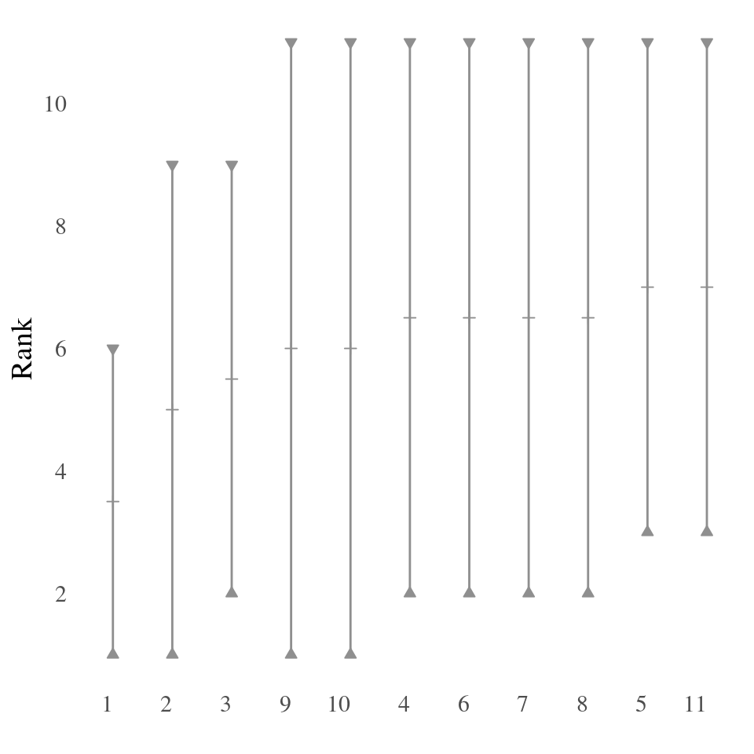
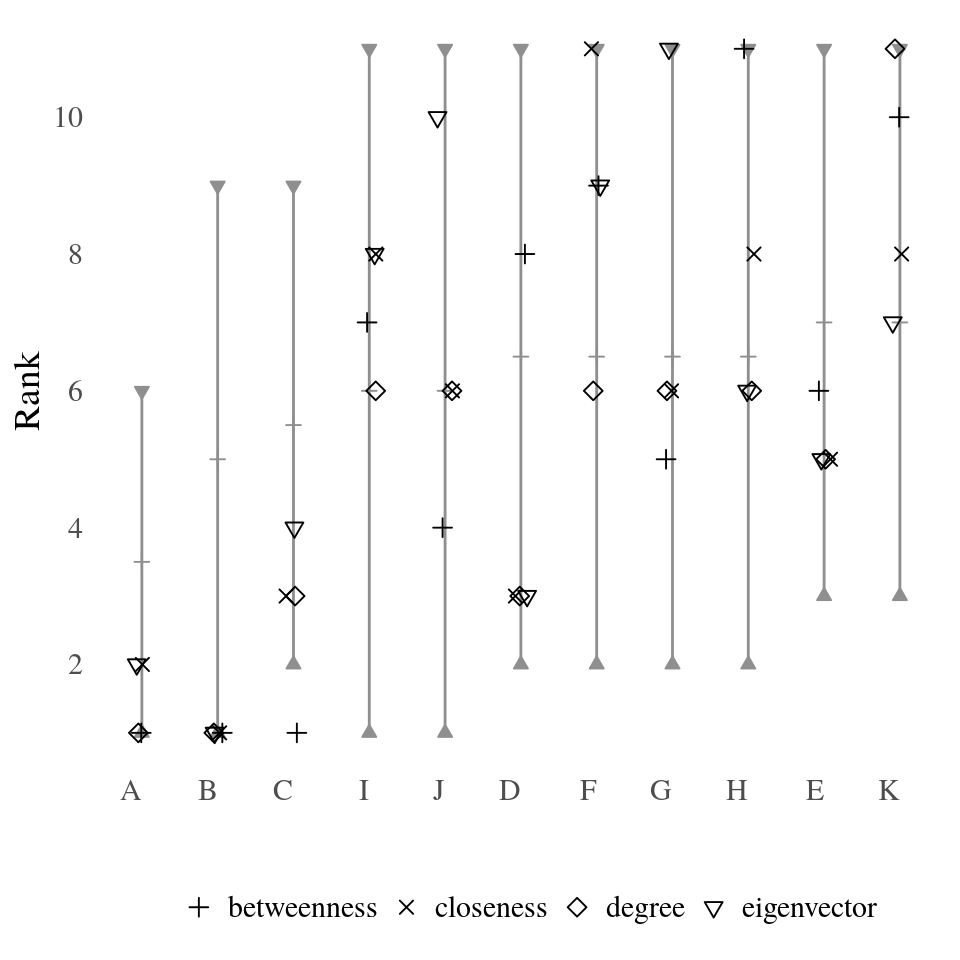
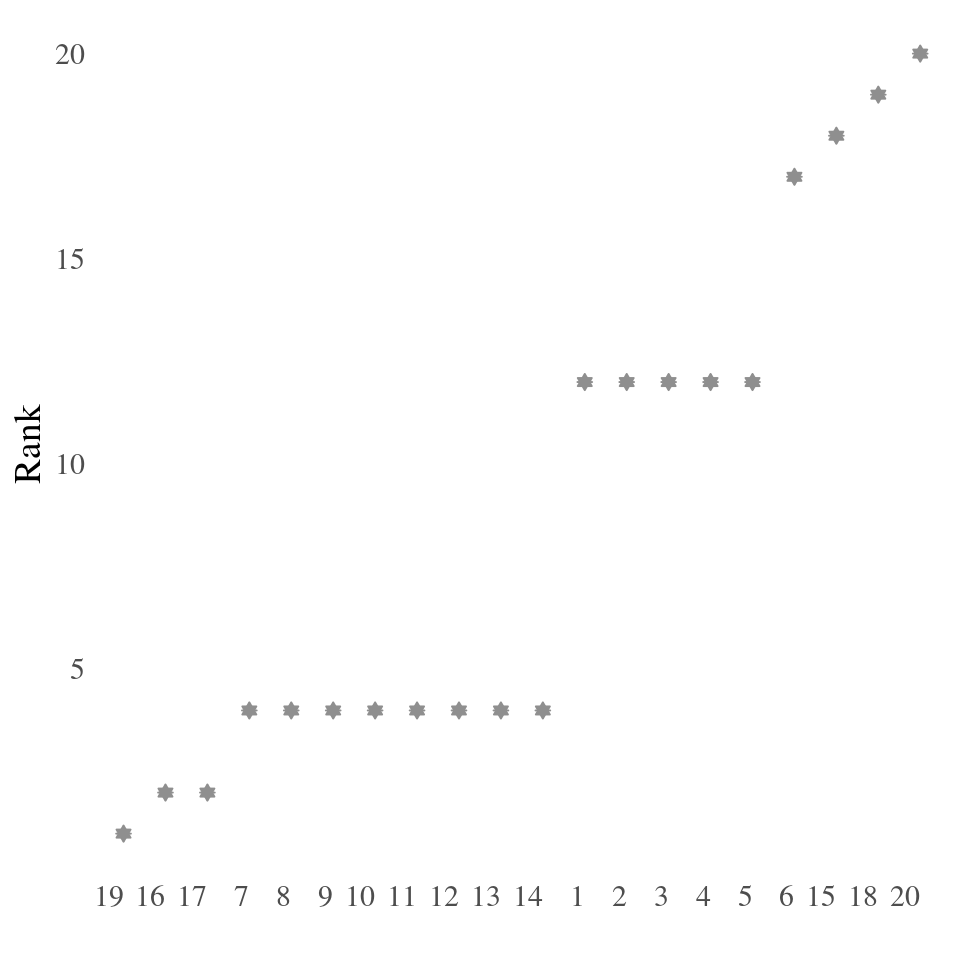
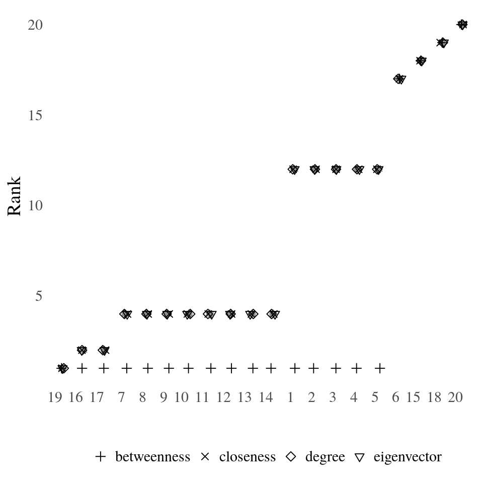

Partial Centrality
This vignette describes some methods to analyse partial rankings as obtained from neighborhood-inclusion or, more general, positional dominance. More on the topic of partial rankings can be found in the following literature.
Schoch, David. (2018). Centrality without Indices: Partial rankings and rank Probabilities in networks. Social Networks, 54, 50-60.(link)
Patil, G.P. & Taillie, C. (2004). Multiple Indicators, partially ordered sets, and linear extensions: Multi-criterion ranking and prioritization. Environmental and Ecological Statistics, 11, 199-228 (link)
Rank intervals
library(netrankr)
library(igraph)
library(magrittr)The function rank_intervals() is used to calculate the maximal and minimal possible rank for each node in any ranking that is in accordance with a given partial ranking.
g <- graph.empty(n=11,directed = FALSE)
g <- add_edges(g,c(1,11,2,4,3,5,3,11,4,8,5,9,5,11,6,7,6,8,
6,10,6,11,7,9,7,10,7,11,8,9,8,10,9,10))
V(g)$name <- LETTERS[1:11]
#neighborhood inclusion
P <- g %>% neighborhood_inclusion()
#without %>% operator:
# P <- neighborhood_inclusion(g)
rank_intervals(P)## min_rank max_rank mid_point
## 1 1 6 3.5
## 2 1 9 5.0
## 3 2 9 5.5
## 4 2 11 6.5
## 5 3 11 7.0
## 6 2 11 6.5
## 7 2 11 6.5
## 8 2 11 6.5
## 9 1 11 6.0
## 10 1 11 6.0
## 11 3 11 7.0The package uses the convention, that higher numerical ranks correspond to top ranked position. The lowest possible rank is thus 1. The column mid_point should not be confused with the expected rank of nodes, which is calculated with the function exact_rank_prob(). See this vignette for more details.
Rank intervals are useful to assess the ambiguity of ranking nodes. The bigger the intervals are, the more freedom exists, e.g. for centrality indices, to rank nodes differently.
The intervals can be visualized with the function plot_rank_intervals(). Note that the package ggplot2 is required to use the function properly. The function takes a partial ranking as input and not already calculated rank intervals. These are calculated internally.

Nodes are ordered according to the mid point for better readability. If the nodes of the input network are named, the parameter names can be set accordingly.
plot_rank_intervals(P,names=V(g)$name)
The function can take a data frame of centrality scores as an additional parameter cent.df. The ranks of each node for each index are then plotted within each interval. Again, the higher the numerical rank the higher ranked the node is according to the index.
cent_scores <- data.frame(
degree=degree(g),
betweenness=round(betweenness(g),4),
closeness=round(closeness(g),4),
eigenvector=round(eigen_centrality(g)$vector,4))
plot_rank_intervals(P,names=V(g)$name,cent.df = cent_scores)
A small jitter effect is added to the points to reduce over-plotting.
Observe the inconsistency of betweenness for node \(C\). Betweenness centrality is, so far, the only index that does not strictly preserve neighborhood-inclusion. That is, while \[
N(u)\subseteq N[v] \text{ and } N(v)\not\subseteq N[u] \implies c(u)<c(v)
\] holds for most indices, betweenness fails to fulfill this property.
The intervals reduce to single points for threshold graphs, since all nodes are pairwise comparable by neighborhood-inclusion.
set.seed(123)
tg <- threshold_graph(20,0.2)
#neighborhood inclusion
P <- tg %>% neighborhood_inclusion()
#without %>% operator:
# P <- neighborhood_inclusion(tg)
plot_rank_intervals(P)
The described betweenness inconsistancy is most evident for threshold graphs as shown in the rank intervals below.
cent_scores <- data.frame(
degree=degree(tg),
betweenness=round(betweenness(tg),4),
closeness=round(closeness(tg),4),
eigenvector=round(eigen_centrality(tg)$vector,4))
plot_rank_intervals(P,cent.df=cent_scores)